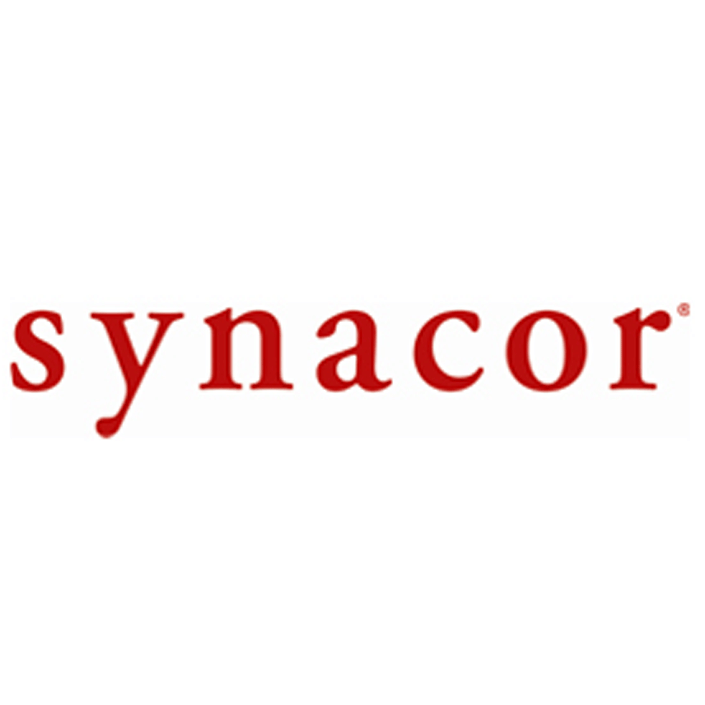
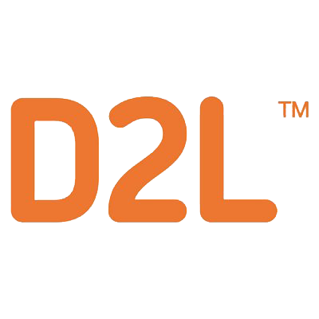
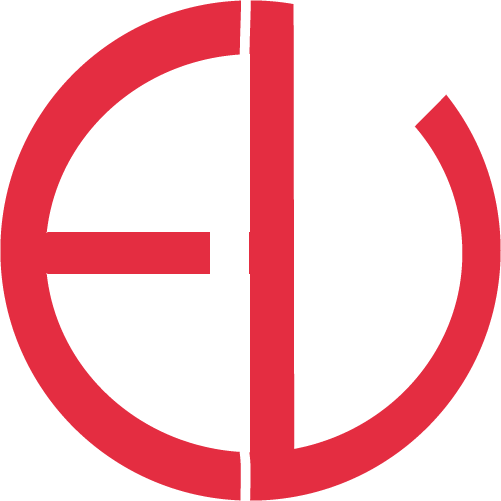

Hi, I'm Eliza, I love to design, develop and explore.
I’m a System Design Engineering student at the University of Waterloo. In my spare time I love to challenge myself by learning new skills and attending hackathons. I have a passion for designing intuitive user interfaces. I enjoy applying Human Factors concepts learned in the classroom to create delightful user experiences. I strongly believe that design is about problem solving and is more than just making things pretty.
In my past experiences working as a Software Developer I have learned many different technologies and skills. I love solving programming problems and creating projects from start to finish. I enjoy working in teams, as well as spending some one-on-one time with my computer.
In my spare time I enjoy browsing design blogs, trying new coding libraries, and working on side projects. I also enjoy hiking, singing and dance. I am currently looking for four month internships or part time positions in UI/UX Design and Software Development.
Download My Resume Here
S K I L L S
Design
- Sketch
- Marvel, Axure, InVision
- Illustrator, Photoshop, InDesign
- Experience in conducting and designing User Testing
- Experienced in gathering requirements and feedback on designs
- Taken courses in Human Factors in Design
- See design portfolio on Behance
Programming
- JavaScript, jQuery, HTML5, CSS3, LESS
- Backbone.js, AngularJS
- AJAX, Require.js, Underscore, Bootstrap
- GIT, Agile, Stash, JIRA, Chrome Dev Tools
- Unix, OSX and Windows
- Java, C++
- See personal projects from Hackathons on Github
Soft Skills
- Passionate, fast learner with excellent problem solving and interpersonal skills gained from team projects
- Leadership and organizational skills acquired from coordinating with different teams on large projects and taking initiative on smaller projects.
- Able to work effectively independently and in a team environment
- Bilingual (English and Russian)
Work Experience
-
Front-End Devloper Coop
Genesys (Jan 2014-May 2014)
Created a JavaScript library to interact with a Server API using AJAX. Used Backbone.js, HTML5, CSS and the JavaScript library to create and style a web interface. Designed and implemented new features for a web application. Prepared instructional and technical documentation to guide future developers and users.
-

Sowftware Engineering Intern
Synacor (Aug 2014- Dec 2014)
Worked on a team to create an email web client in HTML5 and Javascript using an MVVM pattern that interacted with a RESTful API. Collaborated with designer to enhance user experience using vector graphics and CSS3 animation. Assisted in cross-device testing and optimized usability of application across phone, tablet, and desktop browsers. Utilized the AGILE workflow, and Atlassian Software to track and create project tasks.
-
Nspire
Lead UI/UX Desiger (Nov 2014-May 2015)
Designed and developed responsive webpages to connect students with industry professionals. Worked remotely with web development team as well as on individual projects to create websites to advertise Nspire’s initiatives.
-

D2L Incorporated
Product Analyst (May 2015-Aug 2015)
Created several iterations of a mobile design, as well as user flows for a new product. Wrote and conducted usability tests, and provided comprehensive summaries of results. Gathered and analyzed competitive intelligence information and completed design specifications for a product.Created an automated front end testing framework
-

What's Next?
I am currently looking for 4 month internship or partime opportunities to expand and refine my skillset.